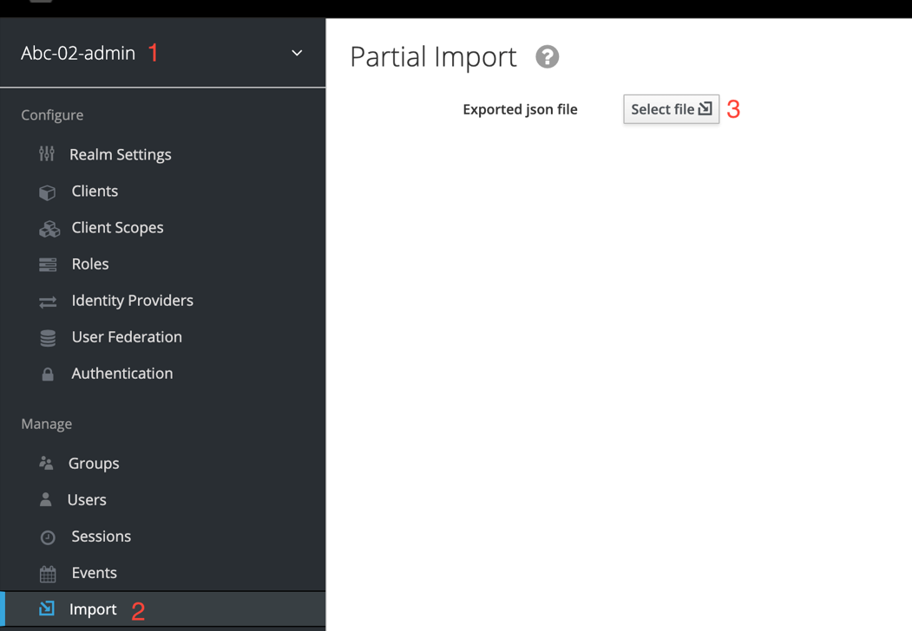

Migrating registries
1. Terminology
This guide provides instructions on migrating a registry from one cluster to another. We use the following names to identify the clusters:
-
Cluster A is the cluster that hosts the registry before the migration (source cluster).
-
Cluster B is the cluster that will host the registry after the migration (target cluster).
| Registry migration is performed by first moving the latest backup copy of the registry from cluster A to cluster B, then restoring the registry on cluster B. |
2. Prerequisites for migration
Before you start the migration, check these prerequisites and ensure that all requirements are met.
-
During the migration, you will need to run a bash script that transfers data from cluster A to cluster B. For a successful migration, this script must be executed on a Linux platform with an
x86-64microprocessor architecture (also known asAMD64,Intel 64, orx64). -
The user performing the migration must be added as the Platform administrator on both clusters via
control-plane-console.For details, see Creating Platform administrators. -
The Platform deployed on cluster B (target cluster) must have the same
control-plane-gerritversion as the registry you are migrating. For example, Platform version1.9.4.11withcontrol-plane-gerritversion1.9.4.7will be compatible with the registry version1.9.4.7. To verify thecontrol-plane-gerritversion, check whether a corresponding branch exists in thecluster-mgmtrepository of the central Gerrit component. If the branch that matches the registry version exists, the registry can be migrated to cluster B. If not, you have two options:-
Update the Platform on cluster B to match the registry version.
-
Update the registry on cluster A to match the version available on cluster B.
-
-
Make sure you have simultaneous access to clusters A and B.
-
During the migration, you will need the following terminal commands:
-
oc -
velero -
rclone -
vault
-
-
Make sure you have a stable Internet connection. The greater the bandwidth, the faster the migration will run. Alternatively, you can use an AWS or other cloud provider’s jumpbox with access to both clusters. Using a jumpbox reduces the time it takes to transfer the backup copy from one cluster to another.
When using a jumpbox, you need to check whether the Platform’s MinIO and Vault are accessible from the jumpbox’s IP address. To get the jumpbox’s IP, use the following command:
ssh sshmyip.com
Next, you need to make sure the jumpbox’s IP address is added to the list of allowed CIDRs at the Platform management level for clusters A and B. For details, see CIDR: Restricting access to Platform and registry components.
If you cannot access
control-plane-console, contact the L2 support team to request access.Before migrating the registry, make sure cluster B does not contain any resources related to the registry.
If the registry was never deployed on cluster B previously, skip the rest of the steps in this section.
- If the registry was previously deployed on cluster B, you need to remove all of its resources by checking the following:
-
Delete the registry from cluster B using the Control Plane admin console.
For details, see Deleting a registry. -
Confirm the changes and wait until the registry is deleted.
-
After deleting the registry, verify that the project is absent in the central Gerrit component.
-
Open Gerrit (Openshift console > Projects >
control-plane> Networking > Routes >control-plane-gerrit). -
Sign in with openshift-sso, go to Browse > Repositories, and search by registry name.
-
If the repository appears in search results, go to Openshift console > Projects >
control-plane> Home > API Explorer > search forgerritprojectin the Filter by kind field →<registry-name>→ Actions > Delete GerritProject. -
After deleting the Gerrit project, go to the Gerrit console and verify that the repository is absent. If the repository exists, delete it via the Gerrit console by opening the registry repository > Commands > Delete project.
-
-
Delete the directory in MinIO.
-
To check the MinIO directories, go to MinioUI. For vSphere clusters, you can find this route in OpenShift console > Projects >
control-plane> Networking > Routes >platform-minio-ui. -
If the route is missing, go to secrets using the following path: Openshift console > Projects >
control-plane> Workloads > Secrets >backup-credentials, copy thebackup-s3-like-storage-urlfield and add the port to the URL (for example,https://endpoint.com:9001).To find MinIO credentials, go to Openshift console > Projects > control-plane> Secrets >backup-credentials. Thebackup-s3-like-storage-access-key-idis the username, and thebackup-s3-like-storage-secret-access-keyis the password. -
Sign in to MinIO and delete the directories in the registry’s bucket:
-
openshift-backups/backups/<registry-name>*
-
openshift-backups/restic/<registry-name>
-
obc-backups/<registry name>
-
-
3. Preparing the registry for migration
-
Make a backup copy of the registry on cluster A.
Before migrating the registry to a new cluster, run the Create-registry-backup-
<registry-name>Jenkins process.If the Jenkins pipeline has completed with a Success status, the backup copy was created successfully.
To get the name of the backup copy, go to the output log from the latest Jenkins execution (Console Output) and look for a message similar to this:
[INFO] Velero backup - <registry-name>-<timestamp> done with Completed status
For example:
[INFO] Velero backup - abc-02-2023-04-18-19-03-14 done with Completed status
In this case,
abc-02-2023-04-18-19-03-14is the name of the backup copy.If the registry version is earlier than 1.9.3, you need to execute the following command in the terminal:
velero backup describe <backup-name>
You can find the name of the backup in the output log from the last execution of the Create-registry-backup-
<registry-name>Jenkins process.For details on backing up and restoring registries, see Backing up and restoring.
-
If the latest Velero backup has a Completed status, you can proceed. If the status of the Velero backup is not Completed, you will need to contact an L2-L3 support team to ensure the Jenkins pipeline functions properly.
-
Prevent modifying the registry using Jenkins pipelines.
For each registry pipeline, go to Configure > Build Triggers, select the Disable this project option, then click Save.
4. Migrating the backup copy from cluster A to cluster B
-
Get login commands for both clusters.
To do this, sign in to the Openshift console, click your username in the upper-right corner, and select Copy login command from the menu. In the new window or tab that opens, copy the entire login command from the Log in with this token field and save it in any text editor.
Do this for both clusters, A and B. -
Get the name of the latest backup copy created on cluster A (for example,
abc-02-2023-04-18-19-03-14). -
Open the terminal and execute the following commands:
Export login for cluster Aexport A_CLUSTER_LOGIN="oc login --token …"
Copy the login command for cluster A that you saved in step 1 and paste it after the
--tokenparameter inside the double quotes. Make sure there are no line breaks at the end of the login command.Export login for cluster Bexport B_CLUSTER_LOGIN="oc login --token …"
Copy the login command for cluster B that you saved in step 1 and paste it after the
--tokenparameter inside the double quotes. Make sure there are no line breaks at the end of the login command.Export registry nameexport REGISTRY_NAME="<registry-name>"
Here is an example of the registry name: abc-02.Export backup copy nameexport BACKUP_NAME="<backup-name>"
Here is an example of the backup name: abc-02-2023-04-18-19-03-14.If the registry was previously migrated to cluster A instead of being deployed on its Platform directly, perform an additional
export:export VAULT_KEY="<key-name>"where
<key-name>is the key for the unseal process, which can be found in the Openshift console (Cluster A) > Projects →<registry-name>→ ConfigMaps >hashicorp-vault-config. The key_name field is the name of the key.For example:
key_name = "autounseal-migration"When migrating a large registry, export the following variable:
export LARGE_DATA="true" -
Download the registry-migration.zip file, then extract it to a new directory using the following command:
unzip registry-migration.zip -d registry-migration
Go to the registry-migration directory (via
cd) and execute this command:chmod +x && ./migration.sh
-
After running the script, log in to the terminal via oc cli on cluster B and verify the following:
-
Velero backup is present on cluster B.
-
A directory named keycloak-export-<registry-name>-* is present inside the directory with the script.
-
5. Preparing the restore on cluster B
-
Migrate realms.
To migrate realms, sign in to Keycloak on cluster B:
-
In the Openshift console, find the
user-managementproject (or namespace), go to Networking > Routes, and click thekeycloaklink.You can obtain Keycloak credentials from keycloak secrets in the same project. Go to Workloads > Secrets, search for a secret named keycloak, and copy the credentials from the Data section. -
In Keycloak, go to
Select realm(1) >Add realm(2) >Import(3), select the keycloak-export-<registry-name>-/-realm.json file, and create realms using the SKIP strategy suggested by Keycloak. Do this for all directories with the name keycloak-export-<registry-name>-*.
-
-
Migrate users.
Without leaving the Keycloak admin console, go to the realm (1) that was created via import. In the realm menu on the left, select
Import(2) (when importing, select the SKIP strategy), then clickSelect file(3) and select the file from the following directory: keycloak-export-<registry-name>-<realm-name>/<realm-name>-users-*.json.If there are several files in this directory, import all of them. 
-
Create a registry via
control-plane-console.-
Create a registry with the same name and version on cluster B. When creating the registry, assign the same administrators as on cluster A and provide up-to-date information.
- Key info
-
You can provide valid keys for your registry or use test keys. After the migration, you can update the key data via the Control Plane admin console. To obtain the key data, contact an L2-L3 support team.
For details on updating registry keys, see admin:registry-management/system-keys/control-plane-registry-keys.adoc.
- Registry template
-
Select the same template as used by the registry on cluster A. To find the template name, go to the Openshift console > Projects >
control-plane> API Explorer > search forcodebase> go tocodebase> Instances > opencodebase <registry-name>and check the following settings:Example 1. codebase.yamlmetadata: annotations: registry-parameters/template-name: templates/registry-tenant-template-minimalIn this case,
templates/registry-tenant-template-minimalis the name of the registry deployment template.
If the console allows you to add DNS for Keycloak and user portals, skip this step, as traffic is still configured for cluster A. -
Right after creating the registry, go to Jenkins (
control-planenamespace > Networking > Routes >jenkins), and stop the first MASTER-Build-<registry-name>build.Wait until the <registry-name>directory and Jenkins pipeline are created. Immediately after the build starts, select Abort.
-
-
Without leaving the Jenkins console, edit the MASTER-Build-
<registry-name>configuration:Go to MASTER-Build-
<registry-name>> Configure > Build Triggers, select the Disable this project option, then click Save. -
Move the values.yaml and values.gotmpl configuration files from the registry’s repository on cluster A to cluster B.
-
Go to the registry repository on cluster A:
-
Go to Control-plane-console > Dashboard > Gerrit.
-
In Gerrit, go to Browse > Repositories and open the
<registry-name>repository. -
In the registry repository, go to Branches >
master, switch to deploy-templates, and open the values.yaml (values.gotmpl) file. Copy its raw code to the clipboard and save it in any text editor.
-
-
Go to the registry repository on cluster B:
-
Go to Control-plane-console > Dashboard > Gerrit.
-
In Gerrit, go to Browse > Repositories and open the
<registry-name>repository. -
Go to Commands and click
Create changeto create a change with the following parameters:-
Select branch for new change:
master. -
Description:
Update registry before migration.Once the change is created, click
Edit>ADD/OPEN/UPLOADand locate the values.yaml (values.gotmpl) file. Copy the configuration from the values.yaml (values.gotmpl) file on cluster A that you saved earlier and paste it inside this file.
-
-
-
Do this for both files: values.yaml and values.gotmpl.
-
Save your changes, wait until the Code Review (СІ Jenkins
+1) pipeline completes, then applyCode-review +2and merge changes to themasterbranch using theSubmitbutton.
-
-
Check for
CustomResourceDefintition.If no registries were deployed on cluster B previously, be sure to check for
CustomResourceDefintition. To do this, log in to cluster B viaoc cliand execute the following command:oc get customresourcedefinition ingressclassparameterses.configuration.konghq.com
If this command ends with an error and returns a
No resources foundmessage in the console, go to the directory where the migration.sh script is located and execute the following command from the root:for file in $(ls crds); do oc apply -f crds/$file; done
6. Restoring the registry on cluster B
-
Go to Jenkins (
control-planenamespace > Networking > Routes >jenkins) and open the folder with your registry name, then run the Restore-registry-<registry-name>pipeline. After starting the pipeline, select the version to restore at thecleanup-registry-before-restorestage, and wait until the process completes.If the process ends with an error or runs for more than 1-2 hours, contact an L2-L3 support team. -
After the pipeline completes, go to the Openshift console > Projects →
<registry-name>and ensure no pods have an error status.If the
bpms-* pod is not running and has an error status, you must fix the passwords for theoperational-instanceandanalytical-instancepods inpostgres. To do this, perform these steps:-
Go to Openshift console > Secrets and find the following secrets:
-
operational-pguser-postgressecret foroperational-instance -
analytical-pguser-postgressecret foranalytical-instance
-
-
Open the secrets and copy the password field.
-
Go to Openshift console > Pods and find the
operational-instanceandanalytical-instancepods. For each pod, execute the following commands successively:psqlALTER ROLE postgres WITH PASSWORD '<password>';where
<password>is the password you copied from the secret for each corresponding pod instance,operationalandanalytical. -
After performing these steps, delete the
bpmspod and wait until its status changes to Running.
If the
registry-rest-apipod returns anImagePullBackOfferror, add cluster B’s IP to the Openshift Route > Nexus annotation.To add the IP, go to Openshift console > Projects →
<registry-name>→ Routes > Nexus > YAML and check the following field in the .yaml configuration:Example 2. route.yamlmetadata: annotations: haproxy.router.openshift.io/ip_whitelist: <NAT Cluster IP>/32,....If the IP address of cluster B is missing, add it to
haproxy.router.openshift.io/ip_whitelistwith a/32mask. -
-
After ensuring all pods have a Running status, transfer the registry configuration to values.yaml/values.gotmpl.
-
Go to control-plane-gerrit (Openshift console > Projects >
control-plane> Networking >gerrit> sign in viaopenshift-sso). -
In Gerrit, go to Browse > Repositories and select the repository with your registry name.
-
Go to Commands and click
Create changeto create a change with the following parameters:-
Select branch for new change:
master. -
Description:
Update registry before migration.
-
-
Once the change is created, click
Edit. -
Add
vaultconfiguration to values.gotmpl.To do this, take the current
vaultconfiguration from thehashicorp-vault-configconfig-map (Openshift console > Projects →<registry-name>→ Workloads > ConfigMaps >hashicorp-vault-config) and copy the field as shown in the following example:ui = true listener "tcp" { tls_disable = 1 address = "[::]:8200" cluster_address = "[::]:8201" } storage "file" { path = "/vault/data" } seal "transit" { address = "https://<vault-url>" disable_renewal = "false" key_name = "<key-name>" mount_path = "transit/" tls_skip_verify = "true" }where
<vault-url>is the link to thevaultand<key-name>is the name of the key. Theconfig-mapcontains up-to-date values. -
Next, click
ADD/OPEN/UPLOADinside the change, search for values.gotmpl, and select the file. Inside the file, add the configuration as shown in the following example:vault: platformVaultToken: {{ env "platformVaultToken" }} openshiftApiUrl: {{ env "openshiftApiUrl" }} centralVaultUrl: {{ b64dec $centralVaultUrl }} server: dataStorage: storageClass: ocs-storagecluster-ceph-rbd auditStorage: storageClass: ocs-storagecluster-ceph-rbd standalone: config: | ui = true listener "tcp" { tls_disable = 1 address = "[::]:8200" cluster_address = "[::]:8201" } storage "file" { path = "/vault/data" } seal "transit" { address = "https://<vault-url>" disable_renewal = "false" key_name = "<key-name>" mount_path = "transit/" tls_skip_verify = "true" } -
Click
Save. -
Resize
kafkadisks. Without leaving the template file, find the following field:storage: zookeeper: size: 5Gi kafka: size: 20Gi -
Modify the
kafka.sizevalue according to the current disk size in Openshift (Openshift console > Projects →<registry-name>→ Storage >PersistentVolumeClaims). Search fordata-0-kafka-cluster-kafka-0and find out itsCapacity. Go back to values.gotmpl and set the desired disk size. For example:storage: zookeeper: size: 5Gi kafka: size: 40Giwhere 40Gi is the current disk size that matches
Capacity. -
Delete all
GerritGroupMember. To do this, log in to cluster B viaos cliand execute the following command:oc -n <registry-name> delete gerritgroupmember --all
-
-
After the changes are applied, the MASTER-Build-
<registry-name>Jenkins process should start. -
After the MASTER-Build-
<registry-name>Jenkins process completes, fix Jenkins credentials in the Jenkins registry.If you don’t have access, add yourself as a registry administrator via
control-plane-console.-
To do this, go to Openshift console > Projects →
<registry-name>→ Workloads > Secrets >gerrit-control-plane-sshkeyand copy the id_rsa field. -
Then go to the registry Jenkins (Networking > Routes >
jenkins) and open Manage Jenkins > Manage Credentials, findgerrit-ci-users-sshkey(gerrit-control-plane-sshkey), and clickUpdate. -
In the Private Key field, paste and
Replacethe id_rsa value you copied earlier.
-
-
Update Nexus URL in the regulations repository.
To do this, go to Openshift console > Projects →
<registry-name>→ Gerrit and sign in to Gerrit.Next, make sure you have access to projects in Gerrit and clone the registry-regulations repository locally. To do this, perform these steps:
-
In the Gerrit web interface, go to settings > HTTP Credentials and click
Generate New Passwordto generate a new password. Save this password in any text editor. -
Go to the
registry-regulationsrepository and copy the contents of the Clone with commit-msg hook text box in the Anonymous HTTP tab. -
Paste the repository clone command into the terminal and execute. The command will prompt you for a login and password. For the login, enter your email. For the password, paste the one you generated earlier in step A.
For details on working with Gerrit repositories, see Deploying regulations in Gerrit. If your Git user is different from your Gerrit user, execute the following commands:
git config --global user.name "New Author Name" git config --global user.email "<email@address.example>"
For example:
git config --global user.name "Jonh Doe" git config --global user.email "jong_doe@doemail.com"
-
-
Change the minor version in settings.yaml in the root directory of the registry-regulations repository, as shown in the following example:
settings: general: package: ua.gov.mdtu.ddm.dataplatform.template register: registry version: 2.21.0For example, add
+1to the version:settings: general: package: ua.gov.mdtu.ddm.dataplatform.template register: registry version: 2.21.1 -
Replace all mentions of cluster A DNS with cluster B. To do this, go to the registry-regulations/data-model directory in the terminal:
cd registry-regulations/data-model
Then execute the following command to replace DNS:
find "." \( -type d -name .git -prune \) -o -type f -print0 | xargs -0 sed -i -e 's/<Cluster A DNS wildcard> /<Cluster B DNS Wildcard> /g'
Cluster A DNS wildcard/Cluster B DNS wildcardrefers toapps.* (for example,apps.reestr1.eua.gov.ua).Here is how a sed rule should look:
's/apps.cluster-a.dns.wildcard.com/apps.cluster-b.dns.wildcard.com/g'
-
Commit and push changes to the repository:
git add --allgit commit -m "Update nexus URL"git push origin refs/heads/master:refs/for/master -
Go to the registry Gerrit, apply
Code-review +2, and merge changes to themasterbranch using theSubmitbutton. -
After updating the master branch, go to the registry Jenkins and make sure the pipelines in the registry-regulations folder have been completed with a Success status.
7. Testing the registry
-
Make sure the user portals are working correctly and the business processes have migrated successfully.
-
All Jenkins pipelines should complete with a Success status.
8. Migrating the registry configuration
- Migrate the registry configuration from cluster A to cluster B according to the following documentation:
-
-
Administrators (for details, see Creating registry administrators).
-
Key info (for details, see admin:registry-management/system-keys/control-plane-registry-keys.adoc).
-
Mail server (for details, see Configuring the mail server).
-
Registry resources
Transfer registry configuration parameters (the global.registrysection) from the values.yaml file on cluster A to the values.yaml file on cluster B. -
DNS (for details, see Configuring custom DNS).
-
Access restrictions (for details, see CIDR: Restricting access to Platform and registry components).
-
Service providers authentication (for details, see Configuring authentication for officers and Configuring self-registration for officers).
-
Service recipients authentication (for details, see registry-develop:registry-admin/cp-auth-setup/cp-auth-setup-citizens.adoc)
-
Backup (for details, see Registry backing up and restoring and Registry backup creation schedule and retention time management).
-